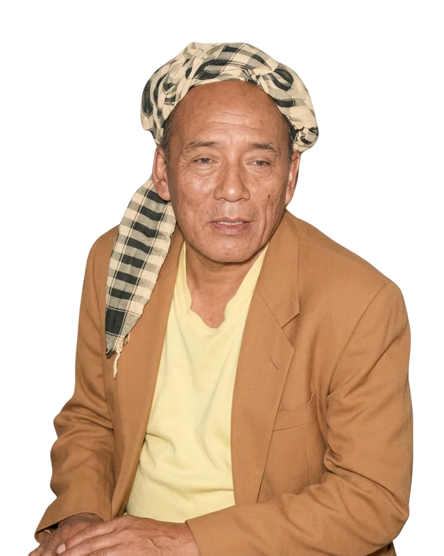

Pondok Pesantren Al-Fattah Siman
Desa Siman, Kecamatan Sekaran, Kabupaten Lamongan. Tempat tafaqquh fiddin yang siap mengabdikan diri untuk masyarakat, agama, dan bangsa.

KH. Abdul Fattah bin Muhammad Rois
Pendiri Pondok Pesantren Al-Fattah, 1942
Selayang pandang
Visi, misi, dan program
Arah pendidikan dan pilihan program belajar di pesantren.
Kegiatan santri
Jadwal harian dan agenda rutin pesantren.
Hasil rumusan Bahtsul Masa’il
Kumpulan hasil rumusan bahtsul masa’il santri Pondok Pesantren Al-Fattah.
Buka kumpulan hasil rumusanVideo profil
Kenali suasana belajar dan kehidupan santri.
Berita pesantren
Kabar terbaru dari kegiatan santri dan pengasuh.
Galeri foto
Dokumentasi aktivitas santri.
Testimoni alumni
Cerita para alumni setelah menempuh pendidikan di pesantren.
Pendaftaran santri baru
Alur pendaftaran
Berkas yang disiapkan
Waktu pendaftaran
Daftar sekarang
Pendaftaran santri baru dilakukan lewat formulir online. Siapkan berkas di sebelah, lalu isi formulirnya.
Buka formulir pendaftaranInfaq pembangunan dan fasilitas
Infaq Anda digunakan untuk perluasan ruang kelas, kitab, dan fasilitas santri. Berapa pun nominalnya, kami terima dengan terima kasih.
Setelah transfer, kirim konfirmasi agar infaq Anda tercatat.